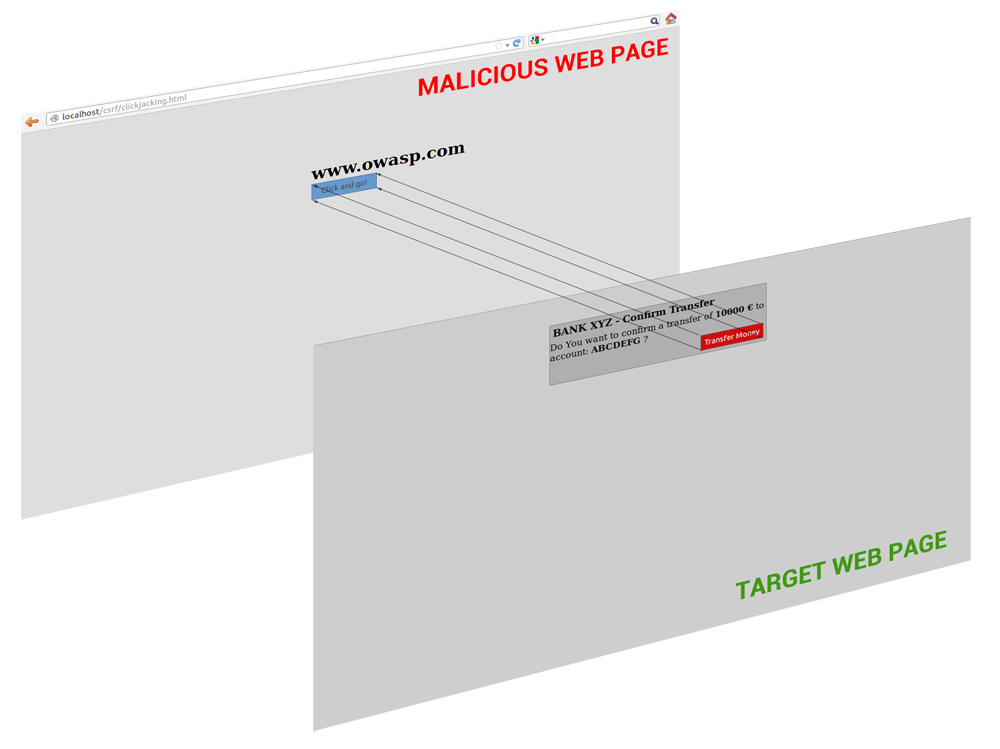

About me
- 10+ years of development: Java, PHP, JavaScript etc.
- Writer, Speaker
- OpenSource contributor
- Yii core team and its representative in PHP-FIG
- Engineer at Stay.com
Not a true security expert. Just know a thing or two.
I did code reviews for many projects...
... and saw same issues again and again
Basics are...
Never trust data no matter what
Filter input,
escape output
Input
- Forms
- Files
- HTTP headers (
$_SERVER['HTTP_X_FORWARDED_FOR']etc.) - User agent
- ...
Output
- Browser
- Console
- Database
- ...
Filter?
Filtering is making sure data is valid.
Prefer whitelisting
Input is invalid by default unless proven otherwise.
Use filter_var for filtering
$email = filter_var($email, FILTER_VALIDATE_EMAIL);
if ($email === false) {
// email wasn't valid...
}
// everything's OK
or use libraries which are reliable
Escaping?
Making special characters behave like normal characters.
Usually by prefixing with another special character.
Each output has different escaping rules.
Common threats
XSS
A script is injected into the page and is executed in user's browser.
Saw it in most projects I've reviewed.
...
<div>
<?= $_GET['query'] ?>
</div>
...
Instead of alerting it can:
- Do things from your name such as...
- Ask your frineds for money
- Make you say/post things
- Transfer your funds
- Send nasty stuff to police
- ...
Two main types
- 1st order - executed immediately
- 2nd order - stored XSS executed later
Solution
Escape output.
Escape HTML
If need just text.
htmlspecialchars($content, ENT_QUOTES | ENT_SUBSTITUTE, 'UTF-8');
Sanitize HTML
If HTML needed.
HTMLPurifier (http://htmlpurifier.org/)
$config = HTMLPurifier_Config::createDefault();
$purifier = new HTMLPurifier($config);
$clean_html = $purifier->purify($dirty_html);
Don't save escaped input to DB
Because you may need to edit it and because data in your own DB could not be trusted.
CSRF
Third party website can submit forms to your website on behalf of the user.
Solution
Introduce CSRF-tokens and use TLS/SSL.
CSRF-tokens
- When a form is displayed, a unique random token is added to it.
- Same token is written to storage (usually session).
- When form is submitted, tokens are checked to match.
Same origin policy isn't enough
- It's about XMLHTTPRequest
- It doesn't prevent sending request, it prevents getting results
Do not use GET to modify application state
<img src="/logout" />
Using $_REQUEST is the same.
SQL injection
Executing arbitrary SQL on a project database.
$email = $_POST['email'];
query("SELECT *
FROM user
WHERE email = '$email';");
' OR 1
UNION SELECT 1,'',3,4,5 INTO OUTFILE '1.php' --%20
UNION SELECT 1,LOAD_FILE('config.php'),3,4,5 --%20
Solution
Escape queries.
Properly!
Manual escaping is... not really good
addslashes()mysql_escape_string()mysql_real_escape_string()- ...
Because
- Could be forgotten
- Context could be wrong (values, tables, columns)
- Could be incomplete
- ...
Use prepared statements
PDO or driver specific. For PDO:
$stmt = $db->prepare("SELECT * FROM user WHERE email = :email");
$stmt->bindValue(':email', $email);
$user = $stmt->fetch();
Table and column names
Use whitelist.
$allowedTables = ['user_comments', 'post_comments'];
if (!in_array($table), $allowedTables, true) {
return false;
}
// query as usual
Lack of upload validation
Ability to upload and execute code.
- Validate mime
- Re-save images
Code injection
Directly execute code.
eval($_GET['query']);
Solution
Avoid eval() or at least use whitelist.
Run PHP with as less permissions possible
Unsafe includes
require $_GET['type'] . '.php';
Clickjacking
Trick user into actually clicking on third party website.
iframe + opactity: 0
Not really PHP related but quite serious.
Solution
Disable embedding in a frame via RFC 7034:
header('X-Frame-Options: DENY');
// or
header('X-Frame-Options: SAMEORIGIN');
if (window.top !== window.self) {
document.write = "";
window.top.location = window.self.location;
setTimeout(function () {
document.body.innerHTML = '';
}, 1);
window.self.onload = function (evt) {
document.body.innerHTML = '';
};
}
Passwords
Problem?
Attacker could guess your password
- Brute force
- Dictionary attack
- Timing attack
Solution: Limit attempts
- 10 guesses from an IP per minute
- CAPTCHA
Still a problem?
- Easy to change IP
- Database leaks
Does it matter how to store password?
Yes!
You should not know password of a user!
Save a hash.
md5, sha1 etc. are no go
Even with salt.
Hashes are meant to be computed fast
Full brute-forcing of 8-char password hashed as SHA-256 takes...
3.5 days of brute forcing on 2011 single GPU
About 20 hours on 2015 GPU
GPU?
Use bcrypt
- Meant to be not so fast.
- Introduces workload for CPU/GPU.
- GPU unfriendly (requires lots of memory access which spoils parallelism).
Cost and password strength are important
Cost?
key derivation function iterations = 2^cost
12+ is a safe choice. Yii uses 13.
Let's do some calculations
Cost = 13 → ~28 hashes/sec. on Nvidia GTX Titan X ($1900)
28 * 60 * 60 * 24 = 2419200 hashes a day
6 char lowercase letter-only password = 308915776 combinations
308915776 / 2419200 = 127 days to brute-force a single password
21 days with 6 of such cards which costs ~15000$+
Add numbers to 6 char password and it would cost ~81000$+ to break it in 21 days
GPUs are getting better and cheaper.
It only gives you time
If you know hashes are leaked:
- Fix leak source
- Invalidate hashes
- Invite users to change passwords and explain that passwords should be changed everywhere
Enforce strong passwords
It would give you more time to react.
Session fixation
PHP specific. Trick user to use session ID you know.
Solution
Use cookies only. In php.ini:
session.use_cookies = 1session.use_only_cookies = 1session_cookie_httponly = 1
Regenerate session ID with session_regenerate_id(true) after login or permissions change.
Don't forget to check permissions
Yes, it happens.
- Direct file access via URL.
- Hiding is not securing.
Prefer denying everything then allowing what's needed.
Information leaks
- Debug mode
- Error pages
- AJAX responses
- Version control
Random numbers
Used for tokens, reset passcodes, generated passwords, UUIDs etc.
Problem
Random numbers could be guess-able or could collide if random source isn't good enough.
Tokens, reset passcodes, generated passwords
Solution
Use safe random sources
What Yii uses
- PHP 7 random_bytes
- LibreSSL
- CryptGenRandom (if Windows)
- /dev/random (if FreeBSD)
- /dev/urandom
- If nothing above available then fail
Be careful about libraries
- mcrypt. Not maintained for >10 years. Has issues
- OpenSSL. Has issues
Conduct tests
Server stack
Be up to date
- Linux
- nginx
- PHP
- Database
- ...
DDOS
- Plan it in advance.
- Rely on firewall (possibly hardware one).
- Could get really complicated.
Have an experienced admin around...
Security is a process
It can't be achieved once and for all.
Educate your team
Have someone familiar with security in the team. Use VCS and do code reviews.
In fact, absolute security is impossible
Plan in advance.
- What if attacker got access to X?
- What data should never ever be exposed? (= should not be stored)
- Should admin take down the server in case of being compromised?
- Have a maintenance page.
- What was accessed? How? What's the harm?
- How to fix that?
- Explain to team so they won't make such mistake again or find technical means to enforce it.
Never stop learning
target="_blank"is unsafe- ImageMagick is unsafe
- ...
Stay safe
More reading and resources
- OWASP (be careful, it's a wiki!)
- https://secure.php.net/manual/en/security.php Yes, there's security section in the manual ;)
- Number of password combinations calculator
- Yii security component
- Security QA at StackExchange
Questions time!